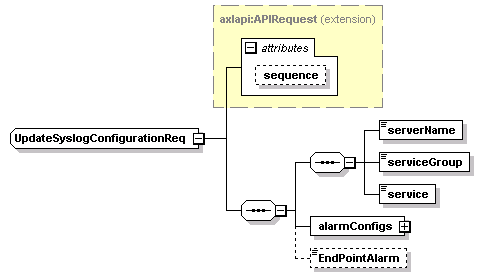
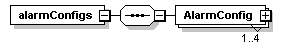
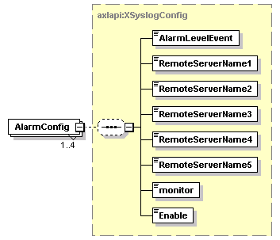

| diagram |  | ||||||||||||
| namespace | http://www.cisco.com/AXL/API/10.5 | ||||||||||||
| type | extension of axlapi:APIRequest | ||||||||||||
| properties |
|
||||||||||||
| children | serverName serviceGroup service alarmConfigs EndPointAlarm | ||||||||||||
| used by |
|
||||||||||||
| attributes |
|
||||||||||||
| source | <xsd:complexType name="UpdateSyslogConfigurationReq"> <xsd:complexContent> <xsd:extension base="axlapi:APIRequest"> <xsd:sequence> <xsd:sequence> <xsd:element name="serverName" type="xsd:string" nillable="false"/> <xsd:element name="serviceGroup" type="axlapi:XServiceGrouping" default="CM Services" nillable="false"/> <xsd:element name="service" type="xsd:string" nillable="false"/> </xsd:sequence> <xsd:element name="alarmConfigs"> <xsd:complexType> <xsd:sequence> <xsd:element name="AlarmConfig" type="axlapi:XSyslogConfig" minOccurs="1" maxOccurs="4"/> </xsd:sequence> </xsd:complexType> </xsd:element> <xsd:element name="EndPointAlarm" type="axlapi:boolean" minOccurs="0"/> </xsd:sequence> </xsd:extension> </xsd:complexContent> </xsd:complexType> |
element UpdateSyslogConfigurationReq/serverName
| diagram | |||||
| type | xsd:string | ||||
| properties |
|
||||
| source | <xsd:element name="serverName" type="xsd:string" nillable="false"/> |
element UpdateSyslogConfigurationReq/serviceGroup
| diagram |  |
||||||
| type | axlapi:XServiceGrouping | ||||||
| properties |
|
||||||
| source | <xsd:element name="serviceGroup" type="axlapi:XServiceGrouping" default="CM Services" nillable="false"/> |
element UpdateSyslogConfigurationReq/service
| diagram | |||||
| type | xsd:string | ||||
| properties |
|
||||
| source | <xsd:element name="service" type="xsd:string" nillable="false"/> |
element UpdateSyslogConfigurationReq/alarmConfigs
| diagram |  | ||
| properties |
|
||
| children | AlarmConfig | ||
| source | <xsd:element name="alarmConfigs"> <xsd:complexType> <xsd:sequence> <xsd:element name="AlarmConfig" type="axlapi:XSyslogConfig" minOccurs="1" maxOccurs="4"/> </xsd:sequence> </xsd:complexType> </xsd:element> |
element UpdateSyslogConfigurationReq/alarmConfigs/AlarmConfig
| diagram |  | ||||||
| type | axlapi:XSyslogConfig | ||||||
| properties |
|
||||||
| children | AlarmLevelEvent RemoteServerName1 RemoteServerName2 RemoteServerName3 RemoteServerName4 RemoteServerName5 monitor Enable | ||||||
| source | <xsd:element name="AlarmConfig" type="axlapi:XSyslogConfig" minOccurs="1" maxOccurs="4"/> |
element UpdateSyslogConfigurationReq/EndPointAlarm
| diagram | |||||||
| type | axlapi:boolean | ||||||
| properties |
|
||||||
| facets |
|
||||||
| source | <xsd:element name="EndPointAlarm" type="axlapi:boolean" minOccurs="0"/> |
XML Schema documentation generated by XMLSpy Schema Editor http://www.altova.com/xmlspy